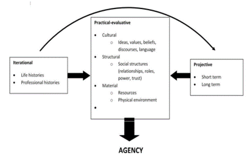
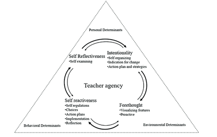

Agency is central to school improvement and development of staff.
There has been much written about agency as a central tent of social thought and how it shapes social action – it can be bound by “Rational Choice Theory” and lost in the thinking of “Theorists of Practice” – French P. (1992), Zey M (2013), Ortner (1984) and Bourdieu (1977, 1984, 1990).
Bandura 2001 and Eteläpelto et al. (2013) apply straightforward principles when defining agency, as such their definition has been adapted for this paper: Agency is the capacity of an individual to purposefully act to achieve a desired outcome – it is an individual’s capacity to achieve change.
Agency can be thought of as the enactment of change. As a result, a lot of the research around agency, refers to individuals as “actors” or “change maker”. All staff in all schools can be change makers.
The seminal paper, What is Agency?, Emirbayer and Mische (1998), provides an in-depth examination of agency, looking at the social and academic interpretation and theories. They define human agency as:
“Human Agency is the temporally constructed engagement by actors of different structural environments – the temporal relational contexts of action – which, through the interplay of habit, imagination, and judgment, both reproduces and transforms those structures in interactive response to the problems posed by changing historical situation.”
Emirbayer and Mische, 1998
Emirbayer and Mische construct what they call the Chordal Triad of Agency, consisting of: 1) the iterational element 2) the Projective element and 3) the Practical-evaluative element. The achievement of agency should be understood as a configuration of influences from the past (iterational), orientations towards the future (projective) and engagement with the present (practical-evaluative). In 2013, Priestley, Biesta and Robinson developed the below model from the Chordal Triad of Agency, they specifically focus on teachers, yet the model holds up for many sectors and is absolutely applicable to non-teaching professionals working within education:

In Flip the System (2015), Priestley, Biesta and Robinson, return to this model and to Emirbayer and Mische (1998), stating agency appears as a:
‘temporally embedded process of social engagement, informed by the past (in its habitual aspect), oriented toward the future (as a capacity to imagine alternative possibilities) and ‘acted out’ in the present (as a capacity to contextualize past habits and future projects with the contingencies of the moment)’
Ibid p.963
Put simply, although agency is involved with the past and the future, it can only ever be ‘acted out’ in the present which is precisely what is expressed in the practical-evaluative dimension.
Developing a strong conceptualisation of the notion of agency, allows us to ask how agency is 'achieved'; in concrete settings and under particular 'ecological' conditions and circumstances.
For the school workforce, the ecological conditions and circumstance are the complex and complicated sector of education – ever-changing with political termism causing a lack of consistency of policy and procedures. In this mercurial system, there is often a need to procure consultants to support strategic thinking or to add organisational capacity.
In education, empowering the school workforce to create agency for themselves in the “present”, through a practical and evaluative dimension (specially through the Material: Resource criteria), is desirable. This self-driven approach will save time, reduce consultant costs and support the professionalisation of teachers and others in schools.
For those who work in education, it is commonly agreed that a top-down (Government/DfE) approach to system change is often fraught with challenges and is usually not cost effective. For individuals in school who have an area of responsibility, be that curriculum or non-curriculum, like Leadership and Management (L&M), Finance or Operations, being the agent of change and having agency is vital.
For teachers there are a number of agency models. Jenkins (2019) combines Bandura’s TriadicReciprocal Causation model (Bandura 1999) and Bandura’s (2001) Model of Core Concepts of Agency:

Jenkins suggests that agency is dependent on key influences involving a combination of three factors/determinants (Personal, Behavioural and Environmental). The triadic interrelating and interacting connection is constantly changing, yet it can be asserted that this connection provides further context and conditions for the present, practical-evaluative dimension, described by Emirbayer and Mische (1998).
The three “agency determinants” in schools:
Jenkins (2019) goes on to explores the types of agency in relation to curriculum change, citing three types of agency:
Jenkins advocates that Proactive and Reactive agency can have a strong impact on change in an organisation, and a combination of the two is also productive. Jenkins study specifically considered teachers and curriculum change, although it could be suggested that these types of agency can be adopted across all leaders recommendation to support school and Trust improvement.
For too long, education and its workforce have been hindered by centrally-driven rhetoric and initiatives. Agency and school workforce professionalisation is in the hands of all school staff…this is the time to make a difference.